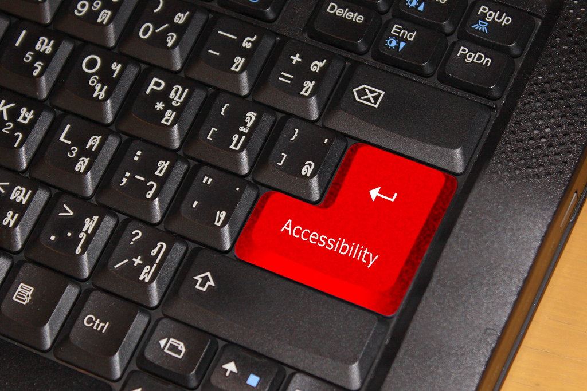

It's Spelled 'Accessibility', not 'Disability'
If your mobile phone is in silent/vibrate mode right now, would you say that you're using an accessibility feature, or just a feature of your phone? If you've ever adjusted the size of onscreen content by pinching or stretching, do you feel like you have a disability, or are you simply using your phone as it was meant to be used?
In this keynote, Scott Davis (Principal Engineer and Web Architect, ThoughtWorks) discusses Universal Design, in which we design features for everyone to use, not just an arbitrary subset of our users.
Granted, over 1 billion people across the world have some form of disability -- that's between 15% and 20% of the planet. And the top 1 million websites average over 60 accessibility errors per page -- that's one error for every 13 elements on the page. So yes, we as an industry have quite a bit of work to do to support the 20% of our users that need our accessibility efforts the most. But if you have plans to add a Conversational UI (like Siri, Alexa, or Cortana) to your product, is your plan to limit that interface to only your blind and low-vision users, or is it something that you hope all of your users will enjoy?